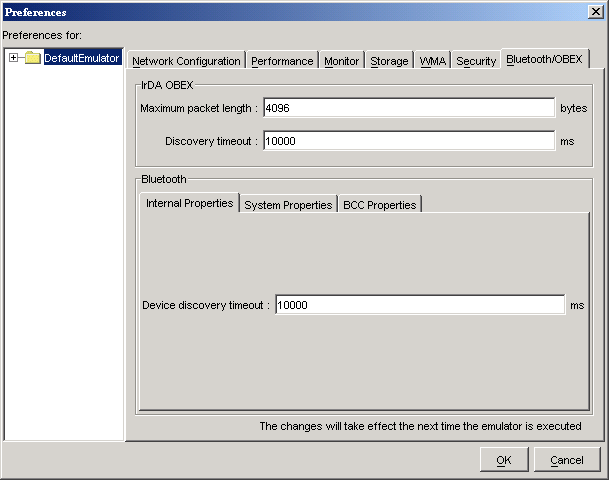

|
|
The J2ME Wireless Toolkit emulator supports JSR 82, the Java APIs for Bluetooth. JSR 82 includes two independent APIs:
This chapter describes how the J2ME Wireless Toolkit implements the Bluetooth and OBEX APIs.
The J2ME Wireless Toolkit emulator allows you to develop and test application that use Bluetooth without having actual Bluetooth hardware. The toolkit simulates a Bluetooth environment for running emulators. Multiple emulator instances can discover each other and exchange data using the Bluetooth API.
For an example, see the documentation of BluetoothDemo in Appendix A, “Application Demonstrations.”
The J2ME Wireless Toolkit implements OBEX transfer over simulated Bluetooth and infrared connections. The simulated infrared connection follows the IrDA standard (see http://www.irda.org/). Simulated infrared transfers can take place between multiple running emulators.
The J2ME Wireless Toolkit allows you to configure the Bluetooth and OBEX simulation environment. Choose Edit > Preferences... from the KToolbar menu to see the following window.

Devices using IrDA in the real world discover other devices by “listening”. You can configure how long the J2ME Wireless Toolkit emulator waits to discover another device using the Discovery timeout field in the IrDA OBEX section of the preferences window. Enter a value in milliseconds.
At the API level, the discovery timeout value determines how long a call to Connector.open("irdaobex://discover...") will block before it returns or throws an exception.
The maximum packet length affects how much data is sent in each packet between emulators. Shorter packet values will result in more packets and more packet overhead.
In the Bluetooth section of the preferences window, the Device discovery timeout is the amount of time, in milliseconds, the emulator will wait while attempting to locate other devices in the simulated Bluetooth environment.
The System Properties tab in the Bluetooth section of the preferences contains properties that can be retrieved in an application using the getProperty() method in javax.bluetooth.LocalDevice.
The Bluetooth properties are fully described in the JSR 82 specification.
The Bluetooth Control Center (BCC) controls Bluetooth settings. Some devices may provide a GUI to customize Bluetooth settings. In the J2ME Wireless Toolkit, the BCC is configured using the BCC Properties tab of the Bluetooth preferences. The properties are as follows:
|
|
J2ME Wireless Toolkit User's Guide J2ME Wireless Toolkit 2.2 |
Copyright © 2004 Sun Microsystems, Inc. All rights reserved. Use is subject to the license terms.